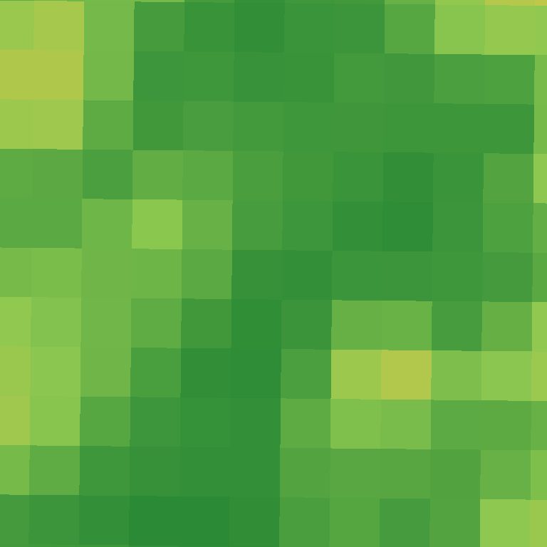

01 / KHÔNG GIAN
Nhìn cả vườn.
Tìm đúng cây.
Quản lý cây theo khu vực, xem vị trí trên bản đồ
và mở hồ sơ ngay từ nơi cây đang đứng.
A-04 Sầu riêng ↗
● Cây trồng ▱ Ranh giới khu
Từ bản đồ vườn đến lịch sử chăm sóc —
VWing giúp bạn kết nối những điều đang diễn ra
trong vườn, ngay trên chiếc điện thoại.
Khu A · Mã cây cố định
VƯỜN CỦA BẠN, RÕ RÀNG HƠN
Giảm thời gian lục tìm ghi chép.
Dành thêm thời gian cho cây trồng.
Quản lý cây theo khu vực, xem vị trí trên bản đồ
và mở hồ sơ ngay từ nơi cây đang đứng.
Lưu hoạt động, hình ảnh và ghi chú theo cây.
Tra lại những gì đã làm, khi cần.
Tạo nhãn QR, quét và truy lại lịch sử của đúng cây trong vườn.
HỒ SƠ & NHÃN QR ↗Trợ lý VWing giúp tra cứu hồ sơ, nhật ký và nguồn dữ liệu đã ghi nhận.
TRỢ LÝ VWING ↗Ghi số trái, ước tính sản lượng và đối chiếu với thực thu, lần bán.
SẢN LƯỢNG & THU HOẠCH ↗THÊM MỘT GÓC NHÌN TỪ TRÊN CAO
Đối chiếu dữ liệu vệ tinh với lịch sử chăm sóc để biết khu vực nào cần được quan sát kỹ hơn.
Đang thử nghiệm với dữ liệu Google Earth Engine.
Chỉ số hỗ trợ quan sát, cần đối chiếu thực địa.

SENTINEL-2 · 08/2026Tín hiệu độ xanh của tán.
Không phải kết luận sức khỏe từng cây.
Vùng mẫu Bảo Lộc · 01/08–01/09/2026 (không gồm ngày cuối). Không phải dữ liệu vườn của bạn.
BẮT ĐẦU THẬT TỰ NHIÊN
Bắt đầu với thông tin bạn đã có.
Bổ sung dần sau mỗi lần ra vườn.
Thêm thông tin vườn, phân khu và hồ sơ cây. Nhập ranh giới khi cần phân tích vệ tinh.
Quét QR, lưu hoạt động chăm sóc, ảnh quan sát và những thay đổi bạn nhìn thấy.
Đối chiếu nhật ký, sản lượng và dữ liệu vệ tinh trước khi lên kế hoạch kiểm tra tiếp theo.
HƯỚNG PHÁT TRIỂN
Phân đoạn tán cây từ ảnh drone, nhận diện loại cây và kết nối cảm biến đang là các hướng nghiên cứu tiếp theo.
BẠN CÓ THỂ ĐANG TÒ MÒ
Thêm một chút thông tin
để chọn đúng cách sử dụng.
VWing đang được phát triển và thử nghiệm trên Android. Trang này giới thiệu tính năng và bản demo minh họa; chưa phải thông báo phát hành trên Google Play.
Hồ sơ và nhật ký có thể lưu trên thiết bị. Các tác vụ tải bản đồ Google Maps và phân tích dữ liệu Earth Engine cần kết nối internet và backend được cấu hình.
Không thể kết luận bệnh từng cây từ các chỉ số này. Sentinel-2 có độ phân giải khoảng 10–20 m tùy băng; dữ liệu hỗ trợ quan sát theo vùng, cần kiểm tra thực địa. Phân đoạn từng tán cây cần ảnh có độ phân giải phù hợp, chẳng hạn ảnh drone.
QR mở hồ sơ gắn với ID của cây: thông tin, lịch sử chăm sóc và các ghi nhận liên quan. Mã QR không tự đo sức khỏe hoặc độ ẩm của cây.
BẮT ĐẦU TỪ VƯỜN CỦA BẠN
Cùng VWing kết nối từng ghi nhận nhỏ thành bức tranh lớn của khu vườn.
Vào màn Tổng quan · Sẵn sàng làm việc tại vườn